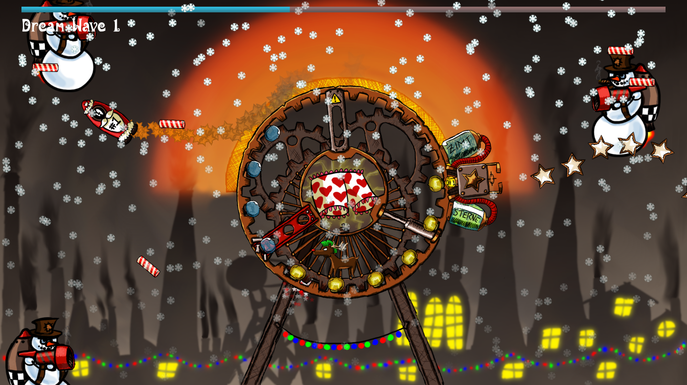

Cinnamon Warfare
This game has been developed during an overnight contest in a team with 3 other guys. The contest theme was winter dream.
As a result of abysmal working conditions, the Snowmen's Labor Union declared strike. Snowmen equipped with jetpacks have coordinated an attack to steal Santa Claus' favorite underpants, in an attempt to blackmail him.
Load the Cinnamon Star Cannon and launch Santa's Personal Rocket to build a defense wall made of gingerbreads. Coordinate as a team of two and defeat the revolt! Only the upper sector is heated, make sure the Santa Rocket stays inside. A circle of lamps indicates your hitpoints.

Controls
General
- Escape: Quit
- F2: Restart game
Player 1 - Rudolph-powered Cinnamon Star Cannon
Shoot snowmen and incoming projectiles!
- Left Arrow: Rotate cannon counter-clockwise
- Right Arrow: Rotate cannon clockwise
- Up Arrow: Shoot
Player 2 - Santa's Personal Rocket
Stay in the heated region and build a defense of gingerbreads!
- A: Turn left
- D: Turn right
- W: Forward thrust
- S: Lay gingerbread